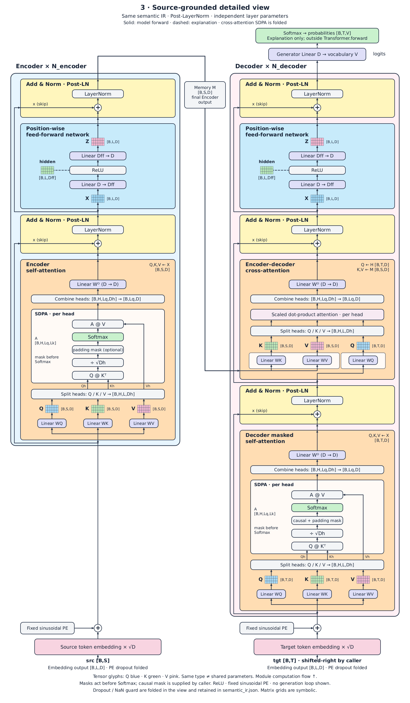
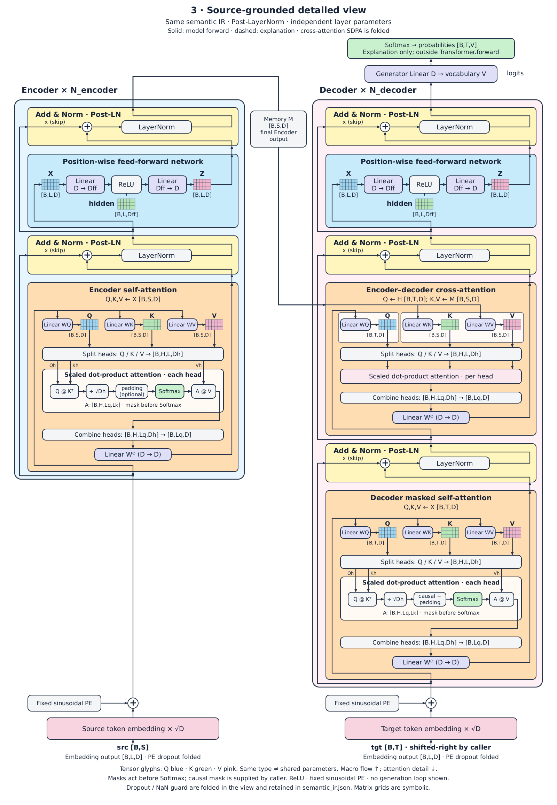

当前默认 统一自底向上版 Attention / SDPA、FFN 与 Add & Norm 的主计算链均向上，Q/K/V 保持并列。图3：1600 × 2742。  查看图3三图预览完整说明
可选 · 上次结果 紧凑混合方向版 整体向上，Attention 内部向下，SDPA / FFN 横排；保留横向 Linear→Q/K/V 张量连接与优化后的箭头。图3：1600 × 2308。  查看图3三图预览当时的说明